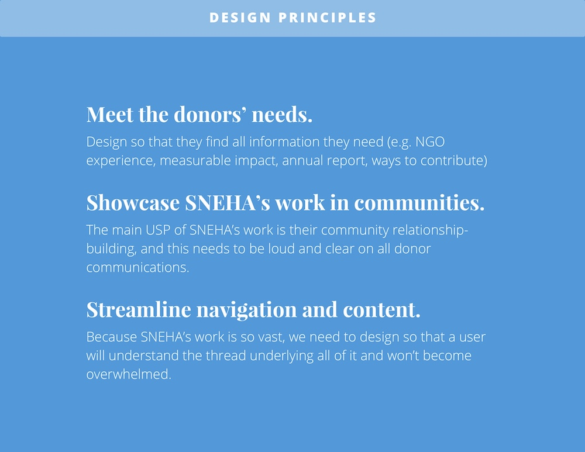

My roles: UX designer (not visual), research lead, content strategist and writer, project manager, art director
*This is a project I worked on during my time at Studio Subu.
Society for Nutrition, Education, and Health Action (SNEHA) is a Mumbai-based organization that works on maternal/child health and domestic violence with communities, governments, and research partners.
How can we bring to life SNEHA’s work with women and children for a donor/partner audience?
I began our project by creating a research plan to understand SNEHA’s organizational strategy, and how it needed to be translated for a donor/partner audience. Through interviews and field visits with SNEHA’s team, staff, and funders, I was able to better understand donor/partner requirements and uncover any other general communications challenges.
What we heard
Our research showed that both individual and institutional donors and partners had very specific criteria they were looking for in NGO’s before engaging. At present, SNEHA was experiencing difficulties in communicating strategically to achieve its organizational goals.
I turned these insights into design principles that would guide our work.
One of the main challenges of this project was organizing all SNEHA’s information on an easily navigable site map. I worked with SNEHA’s Communications Director to categorize their work for easy understanding.
I also worked with her to completely overhaul the existing website content. This meant (pretty much) rewriting or editing content for each of the website’s ~25 pages. I aimed to craft content to build SNEHA’s credibility and establish an ambitious yet professional organizational tone.
Working with content was a challenge simply because of its volume. How do we tell a brief yet comprehensive story around SNEHA’s work?
My first iteration below was designed to break up as much content as possible, to give viewers a quick glance of the page’s content. I considered using a side bar for easy navigation through the page.
However, this design had a couple problems:
My second iteration (final design below) dramatically reduced content so that a sidebar wouldn’t be necessary. This design tells a more concise story, and can also be replicated across many pages.
Again, the sheer amount of content posed a challenge in SNEHA’s mobile responsive website. I prioritized specific components that had to be redesigned for the mobile version, and worked with our developer to implement them.
In my opinion, photography is an extremely important aspect to storytelling and creating an engaging experience. When done strategically, it can build credibility, trust, and interest. For this project, I organized and directed photo shoots in the field, and determined their content and placement.
SNEHA’s website launched in January 2018, to the our and the organization’s great excitement. Though it is still early to discern the site’s impact, we intend that it will: